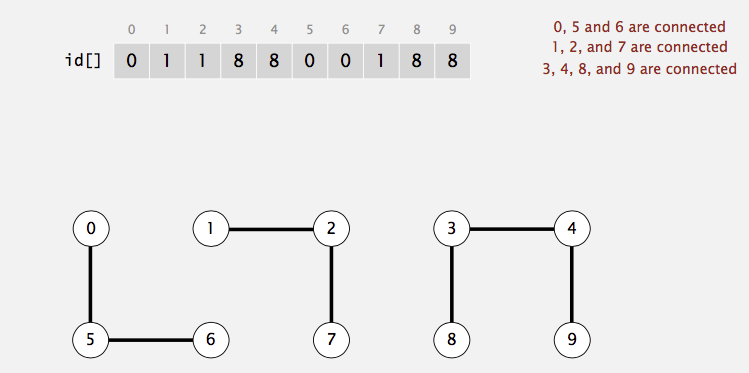

Disjoint Set ADT is an efficient data structure to solve the equivalence problems. It has wide applications:
Kruskal's minimum spanning tree algorithm, Least common ancestor, compiling equivalence statements in Fortran,
Matlab's bwlabel() function in image processing, and so on. In this post, I'll walk through this data structure
in order to have the better preparation for the graph algorithms in the following chapter of MAW.
Note
The implementation of the quick-find, quick-union, smart-union with path compression in C can be seen here.
Equivalence relations
In order to better describe the dynamic equivalence problem, we need to first talk about the concept equivalence relation. A relation \(R\) is defined on a set \(S\) if for every pair of elements \((a,b)\), \(a,b \in S\), \(a\) \(R\) \(b\) is either true or false. If \(a\) \(R\) \(b\) is true, then we say that \(a\) is related to \(b\). An equivalence relation is a relation \(R\) that satisfies three properties:
- (Reflective) \(a\) \(R\) \(a\), for all \(a \in S\).
- (Symmetric) \(a\) \(R\) \(b\) iff \(b\) \(R\) \(a\).
- (Transitive) \(a\) \(R\) \(b\) and \(b\) \(R\) \(c\) implies that \(a\) \(R\) \(c\).
Usually, we use \(\sim\) to denote equivalence relation. Let's consider several examples:
-
The \(\le\) relationship is NOT an equivalence relationship. Although it is reflexive (i.e., \(a \le a\)) and transitive (i.e., \(a \le b\) and \(b \le c\) implies \(a \le c\)), it is not symmetric, since \(a \le b\) does not imply \(b \le a\).
-
Electrical connectivity, where all connections are by metal wires, is an equivalence relation. The relation is clearly reflexive, as any component is connected to itself. If \(a\) is electrically connected to \(b\), then \(b\) must be electrically connected to \(a\), so the relation is symmetric. Finally, if \(a\) is connected to \(b\) and \(b\) is connected to \(c\), then \(a\) is connected to \(c\).
-
Two cities are related if they are in the same country. This is an equivalence relation.
-
Suppose town \(a\) is related to \(b\) if it is possible to travel from \(a\) to \(b\) by taking roads. This relation is an equivalence relation if all the roads are two-way.
We need to define another term equivalence class in order to talk about dynamic equivalence problem. Suppose we are given a set of elements that have the equivalence relation defined over (i.e. for a set \(\{a_1,a_2,a_3\}\), we have \(a_1 \sim a_2\)), the equivalence class of an element \(a \in S\) is the subset of \(S\) that contains all the elements that are related to \(a\). Notice that the equivalence classes form a partition of \(S\): every member of \(S\) appears in exactly one equivalence class.
The dynamic equivalence problem
The dynamic equivalence problem essentially is about supporting two operations on a set of elements where the equivalence relation is defined over:
- find, which returns the name of the set (i.e., the equivalence class) containing a given element.
- union, which merges the two equivalence classes containing \(a\) and \(b\) into a new equivalence class. From a set point of view, the result of union is to create a new set \(S_k = S_i \cup S_j\), destroying the originals and preserving the disjointness of all the sets.
We can model the problem like the following: the input is initally a collection of \(N\) sets, each with one element. This initial representation is that all
relations(except reflexive relations) are false. Each set has a different element, so that \(S_i \cap S_j = \emptyset\); this makes the sets disjoint. In addition,
since we only care about the knowledge of the elements' locations not values, we can assume that all the elements have been numbered sequentially from \(1\) to \(N\).
Thus, we have \(S_i = \{i\}\) for \(i = 1\) through \(N\). At last, we don't care what value returned by find operation as long as find(a) = find(b) iff \(a\) and \(b\)
are in the same set.
Now, let's take a look at an example. Suppose we have a set of \(10\) elements: \(\{0,1,2,3,4,5,6,7,8,9\}\) and we perform the following union operations:
\(1 - 2, 3-4, 5-6, 7-8, 7-9, 2-8, 0-5, 1-9\). Then, we have three connected components (i.e. maximal set of objects that are mutually connected):
\(\{0,5,6\}, \{3,4\}, \{1,2,7,8,9\}\). find(5) should return the same value as find(6).
Quick-find
The first approach to solve the problem is called quick-find, which ensures that the find instruction can be executed in constant worst-case time.
For the find operation to be fast, we could maintain, in an array, the name of the equivalence class for each element. Then find is just a
simple \(O(1)\) lookup:

In the above example, find(0) gives \(0\); find(1) gives \(1\); find(5) gives \(0\). Thus, we know that \(0 \sim 5\), \(0 \nsim 1\), and \(1 \nsim 5\).
For the union(a,b) operation, suppose that \(a\) is in equivalence class \(i\) and \(b\) is in equivalence class \(j\). Then we scan down the array,
changing all \(i\)'s to \(j\).
In the above example, when do union(6,1), we need to change all entries in the equivalence class of \(6\) (i.e., \(0,5,6\)) into \(1\)'s. As you can
see, the number of array acesses for union operation is \(O(N)\). Thus, a sequence of \(N-1\) union (the maximum, then everything is in one set) would
take \(O(N^2)\) time.
Quick-union
The second approach to solve the problem is to ensure that the union instruction can be executed in constant worst-case time, which is called "quick-union".
One thing to note is that both find and union cannot be done simultaneously in constant worst-case time. Recall that the problem doesn't
require that a find operation return any specific name as long as find on the elements in the same connected component returns the same value. Thus,
we can use a tree to represent each component becase each element in a tree has the same root. Thus, the root can be used to name the set. The structure
looks like below:
Since only the name of the parent is required, we can assume that this tree is stored implicitly in an array: each entry \(\text{id}[i]\) in the array represents the
parent of element \(i\). If \(i\) is the root, then \(\text{id}[i] = i\). A find(X) on element \(X\) is performed by returning the root of the tree containing \(X\). The time
to perform this operation depending on the depth of the tree that represents the set containing \(X\), which is \(O(N)\) in the worst case because of the possiblity of creating
a tree of depth \(N-1\). union(p,q) can be done by change the root of tree containing \(p\) into the value of root containing \(q\):
Changing the root value step in union(p,q) is \(O(1)\). However, since we need to find the root of \(p\) and \(q\) respectively, which takes \(O(N)\) in the worst case.
Thus, the union operation takes \(O(N)\).
Improvements
There are two major improvements we can do with our quick-union: smart-union works on union operation and path compression works on find operation. Their goal is
to make the tree of each set shallow, which can reduce the time we spend on find.
Smart union (weighted quick-union)
Smart union is a modification to quick-union that avoid tall trees. We keep track of the size (i.e., number of objects) of each tree and always to link the root of smaller
tree to root of larger tree, breaking ties by any method. This approach is called union-by-size. In quick-union, we may make the larger tree a subtree of the smaller tree, which
increase the depth of the new tree, which increase the find cost. The following picture demonstrates this point:
Another approach is called union-by-height, which tracks the height, instead of the size, of each tree and perform union by making the shallow tree a subtree of the deeper tree.
Since the height of a tree increases only when two equally deep trees are joined (and then the height goes up by one). Thus, union-by-height is a trivial modification of union-by-size.
To find the running time of find and union, we need to find out the depth of any node \(X\), which in this case is at most \(\log N\). The proof is simple: when the depth of \(X\) increases, the
size of tree is at least doubled (i.e., join two equal-size trees). Since there are at maximum \(N\) nodes for a tree, the size of trees doubled at least \(\log N\) times. Thus, the depth of
any node is at most \(\log N\). With this claim, we have running time for find is \(O(\log N)\) and running time for union is \(O(\log N)\) as well.
Path compressionn
Path compression is performed during a find operation and is independent of the strategy used to perform union. The effect of path compression is that every node on the path from \(X\)
to the root has its parent changed to the root. For example, suppose we call find(9) for the following tree representation of our disjoint set:
Then the following picture shows the end state of our tree after calling find(9). As you can see, on the path from \(9\) to \(0\) (root), we have \(9, 6, 3, 1\). All of them have been directly
connected to the root after the call is done:
This strategy may look familiar to you: we do the path compression in the hope of the fast future accesses on these nodes (i.e., \(9,6,3,1\)) will pay off for the work we do now. This idea is exactly the same as the splaying in splay tree.
When union are done arbitrarily, path compression is a good idea, because there is an abundance of deep nodes and these are brought near the root by path compression. Path compression
is perfectly compatible with union-by-size, and thus both routines can be implemented at the same time. In fact, the combination of path compression and a smart union rule guarantees
a very efficient algorithm in all cases. Path compression is not entirely compatible with union-by-height, because path compression can change the heights of the trees. We don't want
to recompute all the heights and in this case, heights stored for each tree become estimated heights (i.e., ranks), but in theory union-by-rank is as efficient as union-by-size.
If we do analysis on smart union with path compression, the running time for any sequence of \(M\) union-find operations on \(N\) objects makes \(O(N + M\log^*N)\) 1 accesses.
The following table summarizes the running time for \(M\) union-find operations on a set of \(N\) objects (don't forget we need to spend \(O(N)\) to initialize disjoint sets):
| algorithm | worst-case time |
|---|---|
| quick-find | \(MN\) |
| quick-union | \(MN\) |
| smart union | \(N + M\log N\) |
| quick union + path compression | \(N + M\log N\) |
| smart union + path compression | \(N + M\log^*N\) |
The running time for each operation for each algorithm is following:
| algorithm | initialize | union | find |
|---|---|---|---|
| quick-find | N | N | 1 |
| quick-union | N | N | N |
| smart union | N | \(\log N\) | \(\log N\) |
| quick union + path compression | N | \(\log N\) | \(\log N\) |
| smart union + path compression | N | \(\log^*N\) | \(\log^*N\) |
Remarks
Sedgewick slide offers view that may be helpful in modeling the problems using the union-find data structure. Essentially, union-find structure addresses the "dynamic connectivity problem":
Given a set of N objects, support two operation: 1. Connect two objects. 2. Is there a path connecting the two objects?
For example, given two points in a maze, we may ask "Is there a path connecting \(p\) and \(q\)?" Objects can be:
- Pixels in a digital photo.
- Computers in a network.
- Friends in a social network.
- Transistors in a computer chip.
- Elements in a mathematical set.
- Variable names in a Fortran program.
- Metallic sites in a composite system.
Segewick gives a list of union-find applications:
- Percolation.
- Games (Go, Hex).
- Dynamic connectivity.
- Least common ancestor.
- Equivalence of finite state automata.
- Hoshen-Kopelman algorithm in physics.
- Hinley-Milner polymorphic type inference.
- Kruskal's minimum spanning tree algorithm.
- Compiling equivalence statements in Fortran.
- Morphological attribute openings and closings.
- Matlab's bwlabel() function in image processing.
Links to resources
Here are some of the resources I found helpful while preparing this article:
- M. A. Weiss, Data Structures and Algorithm Analysis in C. (2nd ed.) Menlo Park, Calif: Addison-Wesley, 1997, ch. 8.
- R. Sedgewick 1946 and K. Wayne 1971, algorithms. (4th ed.) Upper Saddle River, NJ: Addison-Wesley, 2011, ch. 1, sec. 5.
-
\(\log^* N\) counts the number of times you have to take the \(\log\) of \(N\) to get one. This is also called iterated log function. For example, \(\log^* 65536 = 4\) because \(\log\log\log\log65536 = 1\). ↩